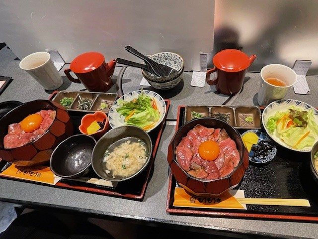
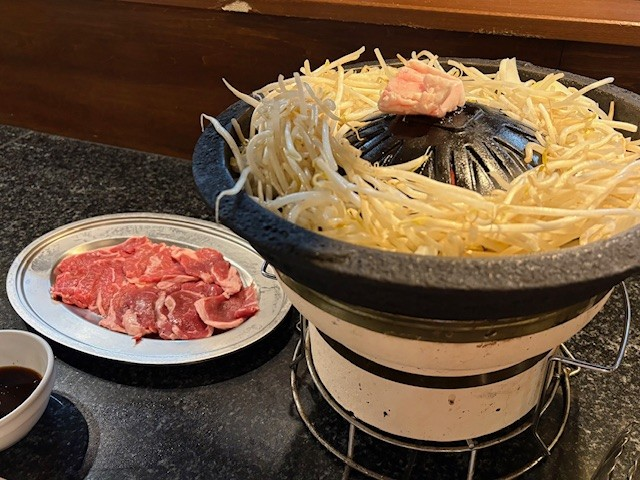
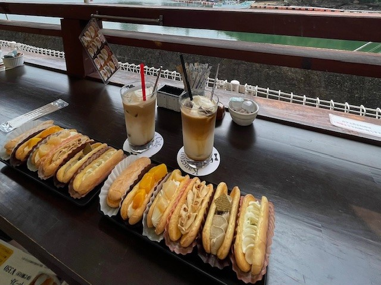
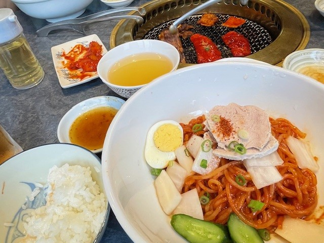
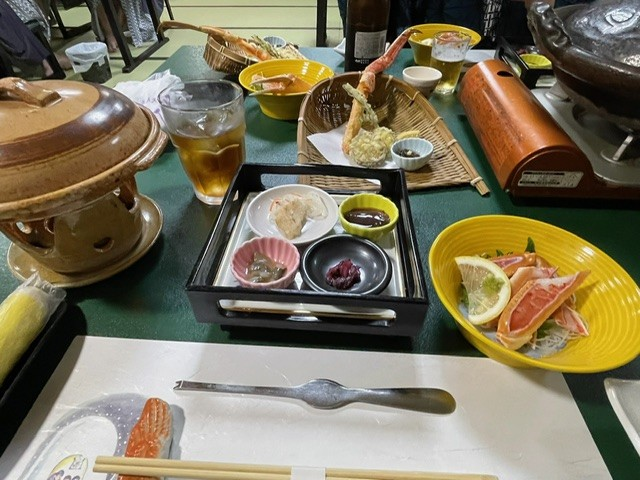

1位：牛タンひつまぶし
炭火和牛ひつまぶし専門店 もうもう亭

名古屋新名物！牛ひつまぶし
とろける牛がたまらない...!
| 住所 | 〒460-0008 愛知県名古屋市中区栄１丁目１４−２１ ピアキャステルSKビル ２Ｆ |
|---|---|
| 電話番号 | 052-231-4433 |
| 営業時間 | 月～金：11:30-18:00, 18:00-22:00 土：11:30-14:00, 18:00-22:00 |
| 定休日 | 日 |
| 公式サイト | もうもう亭 |
2位：ジンギスカン
小樽ジンギスカン倶楽部 北とうがらし本店

北海道といえばコレ！！
新鮮で臭みの少ないラム肉が最高
| 住所 | 〒047-0024 北海道小樽市花園１丁目１０−７ |
|---|---|
| 電話番号 | 0134-24-8929 |
| 営業時間 | 17:00-22:30 |
| 定休日 | 12月31日、1月1日 |
| おたるぽーたる | 北とうがらし本店 |
3位：生かげろう
福菱本店 かげろうカフェ

ここでしか食べられない
奇跡の和歌山名物生かげろう
| 住所 | 〒649-2211 和歌山県西牟婁郡白浜町１２７９−３ |
|---|---|
| 電話番号 | 0739-42-3129 |
| 営業時間 | 8:00-18:00 |
| 定休日 | 年中無休※臨時休業あり |
| 公式サイト | かげろうカフェ |
4位：焼肉
元祖平壌冷麺屋本店

日本で最初に平壌冷麵を提供したお店
行列必至の元祖平壌冷麵
| 住所 | 〒653-0835 兵庫県神戸市長田区細田町６丁目１−１４ |
|---|---|
| 電話番号 | 078-691-2634 |
| 営業時間 | 11:30-19:00 |
| 定休日 | 火 |
| 食べログ | 元祖平壌冷麵屋本店 |
5位：カニ会席
ハチ北温泉 お宿ひさ家

冬の味覚の王者 日本海特産松葉ガニ
ここを超えるカニをまだ知らない
| 住所 | 〒667-1344 兵庫県美方郡香美町村岡区大笹７５６−２ |
|---|---|
| 電話番号 | 072-748-3353 |
| 営業時間 | 宿のためなし |
| 定休日 | 年中無休 |
| 公式サイト | お宿ひさ家 |